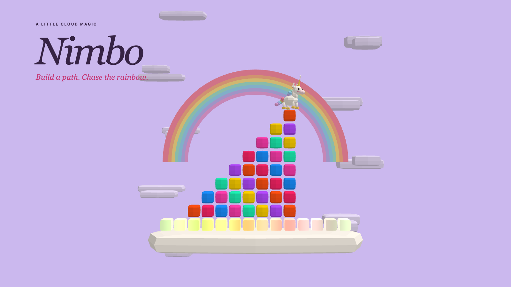
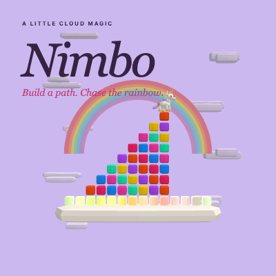
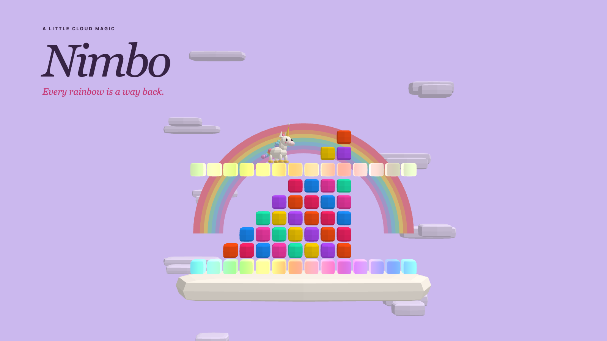
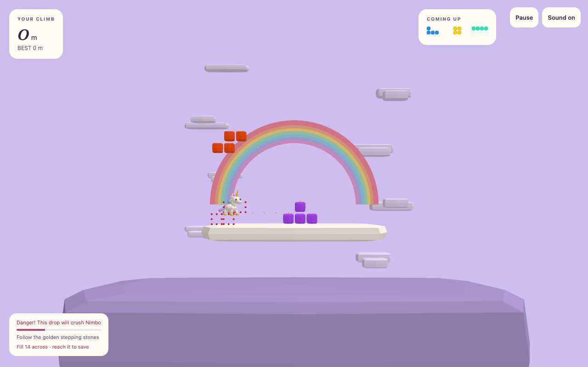
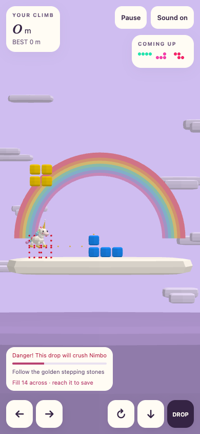

Nimbo
A little cloud magic. Build a path. Chase the rainbow.

Cover · 1600 × 900Staged scene rendered with the game models.
Thumbnail · 400 × 400Promotional artwork.
Checkpoint scene · 1600 × 900Staged scene rendered with the game models.
Desktop gameplay · 1280 × 800Captured from the unchanged competition entry.
Mobile gameplay · 390 × 844Captured from the unchanged competition entry.Listing description
Build a staircase of rainbow clouds for Nimbo, a tiny unicorn who climbs by herself. Match five consecutive colors to make room, complete a full row to create a glowing checkpoint, and stay ahead of the rising fog. Place carefully: falling pieces can crush Nimbo. A little planning, a little sparkle, and one more climb.
Desktop and Mobile · Single player · Offline · Procedural WebGL graphics and synthesized music.